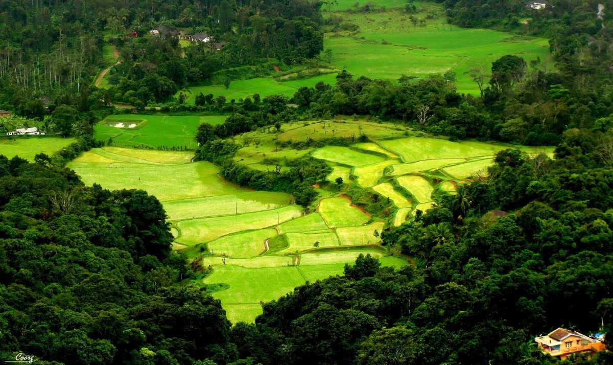
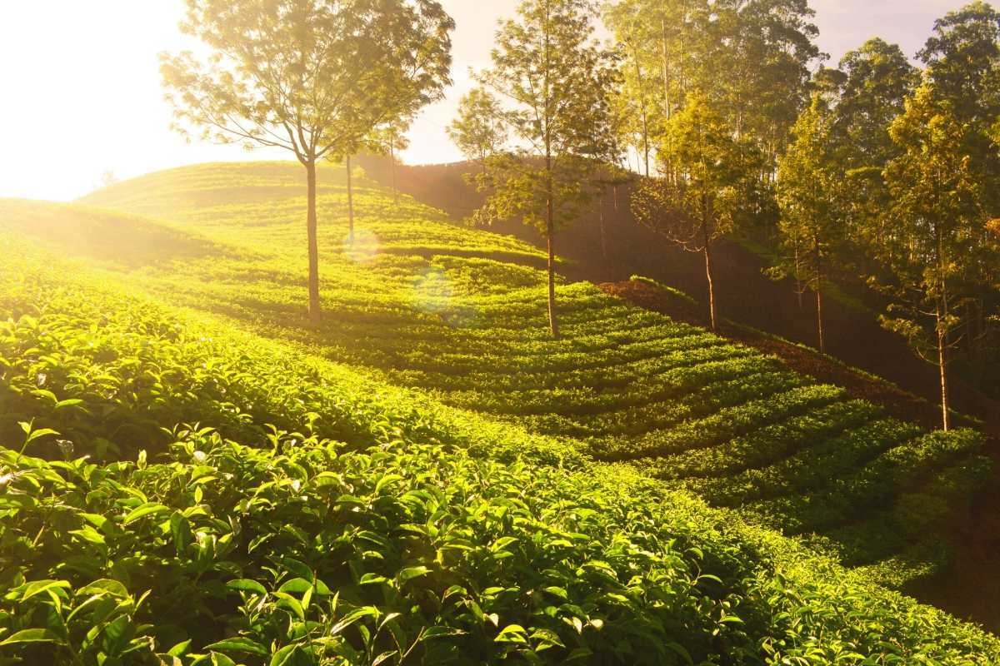

Famous places of Karnataka
This is Coorg place
- 
Located amidst imposing mountains in Karnataka with a perpetually misty landscape, Coorg is a popular coffee producing hill station. It is popular for its beautiful green hills and the streams cutting right through them. It also stands as a popular destination because of its culture and people
About the place
This is BADAMI place

Located in a valley of rugged red sandstone, surrounding the Agastya Lake, Badami (formerly known as Vatapi) is an archaeological delight owing to its beautifully crafted sandstone cave temples, fortresses and carvings. Located in the Bagalkot district in Karnataka
About the place
This is MYSORE place

Famously known as The City of Palaces, it wouldn’t be wrong to say that Mysore, currently Mysuru, is one of the most important places in the country regarding ancient reigns. It is replete with the history of its dazzling royal heritage, intricate architecture, its famed silk sarees, yoga,
About the place
This is CHIKMAGALUR place
- 
Popularly known as the ‘Coffee Land of Karnataka’, Chikmagalur is situated in the foothills of the Mullayangiri Range and is one of the most beautiful hill stations in Karnataka. Chikmagalur has a perpetual fragrance of coffee lingering in the air with it plenty of coffee plantations.
About the place
Famously known as The City of Palaces, it wouldn’t be wrong to say that Mysore, currently Mysuru, is one of the most important places in the country regarding ancient reigns. It is replete with the history of its dazzling royal heritage, intricate architecture, its famed silk sarees, yoga,
mysoretop
Popularly known as the ‘Coffee Land of Karnataka’, Chikmagalur is situated in the foothills of the Mullayangiri Range and is one of the most beautiful hill stations in Karnataka. Chikmagalur has a perpetual fragrance of coffee lingering in the air with it plenty of coffee plantations.
Chikmagalur top
Located in a valley of rugged red sandstone, surrounding the Agastya Lake, Badami (formerly known as Vatapi) is an archaeological delight owing to its beautifully crafted sandstone cave temples, fortresses and carvings. Located in the Bagalkot district in Karnataka
badamitop
Located amidst imposing mountains in Karnataka with a perpetually misty landscape, Coorg is a popular coffee producing hill station. It is popular for its beautiful green hills and the streams cutting right through them. It also stands as a popular destination because of its culture and people
coorgtop